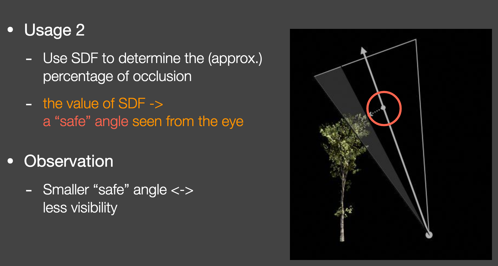

real-time shadow summary
补点常识吧
basic things
https://www.youtube.com/watch?v=AbyHtfDG8ME
- light
- luminous object
- transparent, translucent and opaque objects
- light travels a straight way
- occlusion cause shadow
soft shadow
https://blog.demofox.org/2017/07/01/why-are-some-shadows-soft-and-other-shadows-hard/
soft shadow 并不是简单的边缘blur, 从形成原理上看umbra和距离光源的远近还有光源的大小都有关系The math behind shadow mapping

state of art
projection shadow
simply apply this matrix to the objects that should cast shadows on the plane π, and render this projected object with a dark color and no illumination.
- 考虑可能存在的问题：
- 阴影绘制在了平面的下面 --> 绘制顺序 or shadow map
- ground plane有边界，阴影绘在了边界外 --> stencil
- 光源处于shadow caster和receiver之间导致anti-shadow --> projection with clipping
- soft shadow
- 面光源采样得到一个punctual light, 渲染阴影，sum and average
- 通过filtering去blur hard shadow
- renders the silhouette edges with gradients that go from dark in the center to white on the edges
projective texture mapping
the occluder is rendered in black from the light’s viewpoint into an otherwise white texture. 以上两个projection的方法存在的问题：
- identify which objects are occluders and which are their receivers
- occluding objects cannot shadow themselves
shadow volume
 the count is incremented as a ray passes through a frontfacing triangle of a shadow volume and decremented on leaving through a backfacing triangle.
两个pass：
the count is incremented as a ray passes through a frontfacing triangle of a shadow volume and decremented on leaving through a backfacing triangle.
两个pass：
- 一个pass只画front face，更新stencil buffer +1
- 一个pass只画back face，更新stencil buffer-1 存在的问题：
- 每个三角面片都要生成一个shadow volume计算量太大
- 受视角方向和光照方向影响很大
shadow maps
basic principle
from the light's point of view.
texture
- DEPTH textures are usually of 24bits but they could be of 32bits
encode the depth as a color
//coverts a value from [0..1] into RGBA vec4 PackDepth32( in float depth ) { depth *= (256.0*256.0*256.0 - 1.0) / (256.0*256.0*256.0); vec4 encode = fract( depth * vec4(1.0, 256.0, 256.0*256.0, 256.0*256.0*256.0) ); return vec4( encode.xyz - encode.yzw / 256.0, encode.w ) + 1.0/512.0; } //coverts a RGBA into a float [0..1] float UnpackDepth32( in vec4 pack ) { float depth = dot( pack, 1.0/vec4(1.0, 256.0, 256.0*256.0, 256.0*256.0*256.0) ); return depth * (256.0*256.0*256.0) / (256.0*256.0*256.0 - 1.0); }
- shadow view --> shadowmap camera viewprojection matrix
- directional light orthographic view
- spot light perspective view
- poInt light cube map, 6 times perspective view
- reprojecting to shadow map when projecting a point using a projection matrix the result is in homogeneous coordinates, and we need to divide by the resulting .w to pass to clip-space coordinates.
- comparing depth dx11 sampleCmp 可以在采样的时候进行比较输出[0,1]的值
shadow map problems and solutions
- shadow acne
- slope scale bias Bias根据物体的normal和光照方向夹角决定，夹角越小，bias越小。
- normal offset bias 预先将物体的position延normal方向移动一个bias，bias和normal和光方向夹角成正比。
- light leaks / peter panning
- front face culling
- perspective aliasing and projective aliasing 离viewer更近的区域在shadow map使用更多的采样


{kind=link}
{kind=link}
{kind=link}
{kind=link}
{kind=link}
软阴影
PCF(Percentage-Closer Filtering)
retrieving multiple samples from a shadow map and blending the results, to find the percentage of the samples taken that are visible to the light. PCF会考虑以下几个variations
- 采样范围大小
- 采样数
- 采样点如何选取
- 采样结果权重 通常，采样randomly rotated Poisson distribution可以得到比较好的效果。
PCSS(Percentage-Closer Soft Shadows)
基于的主要假设是the average blocker is a reasonable estimate of the penumbra size.
The average distance of these occluders from the location is used to determine the sample area width.
The width of the surface area to the sample grows as the average occluder gets farther from the receiver and closer to the light.


{kind=link}
filtered shadow map
VSM(Variance Shadow Map)
- 基本假设 receiver是一个平面。
基本原理 得到一个an upper bound on the visibility percentage of the receiver. 为了提升PCF的第三步的效率。
 这个不等式理论上只有t在均值的右侧才正确。
这个不等式理论上只有t在均值的右侧才正确。
 PCSS第一步中的the average depth of blockers是如何近似的？
PCSS第一步中的the average depth of blockers是如何近似的？

优点 VSM can work with just a single, high-quality sample to determine the entire area’s effect and produce a smooth penumbra
缺点 two or more occluders cover a receiver and one occluder is close to the receiver. 就是大多数occluders没有遮挡，但是有一个遮挡了，因为是求平均，所以会出现light bleeding (a.k.a. light leaks).
{kind=link}
{kind=link}
{kind=link}
{kind=link}
CSM (Convolution Shadow Mapping) & ESM(Exponential Shadow Map)
把shadow函数用幂函数来建模：
 然后用convolution来做filtering，这个filtering过的值就不是非0即1，有了中间值即soft shadow.
然后用convolution来做filtering，这个filtering过的值就不是非0即1，有了中间值即soft shadow.
{kind=link}
{kind=link}
Moment Shadow Mapping
- 基本思路 Use higher order moments to represent a distribution
- 缺点
- Costly storage (might be fine)
- Costly performance (in the reconstruction)
{kind=link}
{kind=link}
SDF(Signed Distance Field)
- 基本原理


 不同的k决定的阴影有多soft
不同的k决定的阴影有多softfloat softshadow( in vec3 ro, in vec3 rd, float mint, float maxt, float k ) { float res = 1.0; for( float t=mint; t < maxt; ) { float h = map(ro + rd*t); if( h<0.001 ) return 0.0; res = min( res, k*h/t ); t += h; } return res; } - 优点
- Fast
- High quality
- 缺点
- Need precomputation
- Need heavy storage
- Artifact
- 复杂几何下产出的banding effects


- 复杂几何下产出的banding effects
{kind=link}
volumetric shadow technique
transparency depth map
The transparent objects are rendered to it, and the closest depth and color or alpha coverage is stored. 缺点是透明物体的自阴影实现不了。
deep shadow maps
each shadow-map texel stores a function of how light drops off with depth. This function is typically approximated by a series of samples at different depths, with each sample having an opacity value. 每个shadow map pixel 存若干个深度值和alpha。
opacity shadow maps，adaptive volumetric shadow maps
基本都是在deep shadow maps的基础上做了一些延伸和拓展。